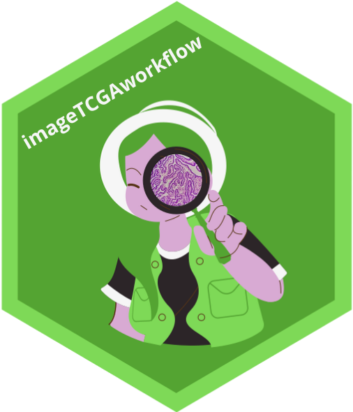

An end-to-end Bioconductor workflow for histopathology image analysis using TCGA diagnostic whole-slide images.
Ecosystem packages
|
imageTCGA Shiny app for image discovery |
imageFeatureTCGA Import HoVerNet & GigaPath features |
imageTCGAutils Spatial statistics & dimensionality reduction |
HistoImagePlot Histopathology visualization |
Overview
The TCGA image database contains ~11,765 diagnostic whole-slide images (WSI) from ~9,640 patients. This workflow covers:
-
Data discovery — browse and select images with the
imageTCGAShiny app -
Data access — download WSIs from GDC using
GenomicDataCommons -
Feature retrieval — import pre-computed HoVerNet and Prov-GigaPath features via
imageFeatureTCGA -
Spatial analysis — PCA, Moran’s I, LISA with
imageTCGAutils -
Visualization — overlay cell segmentation on tissue thumbnails with
HistoImagePlot - Downstream analyses — multi-omics integration (MOFA+), point pattern analysis, survival

Installation
if (!requireNamespace("BiocManager", quietly = TRUE))
install.packages("BiocManager")
BiocManager::install(c(
"billila/imageTCGA",
"waldronlab/imageFeatureTCGA",
"waldronlab/imageTCGAutils",
"waldronlab/HistoImagePlot"
))Website
Full workflow documentation: https://billila.github.io/imageTCGAWorkflow